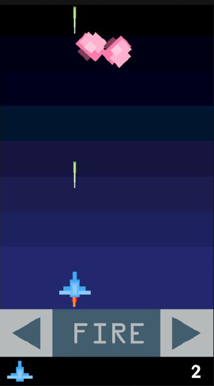

CST 338 : Software Design
Provides students with the fundamental concepts to develop large-scale software, focusing on the object-oriented programming techniques. Coverage includes the introduction to Java programming language, object-oriented programming, software life cycle and development processes, requirements analysis, and graphical user interface development.
Program Outcomes:
I made a simplified, space invaders-like game using Android Studio for the final project.

Specifications: pdf
Game: zip (Open and sideload with Android Studio)